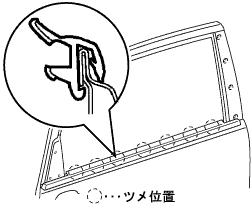
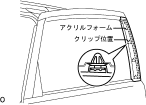
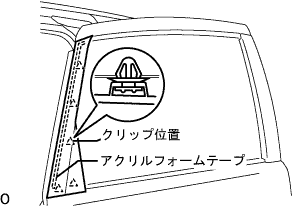

スライドドアガラスウエザストリツプASSY OUT LH 取り付け |
| 1. フロントドアガラスアウタウエザストリップ クリップ取り付け |
|  |
上から押し込み、ツメのかん合を合わせ、フロントドアガラスウ エザストリップASSY OUT LHを取り付ける。
| 2. リヤドア ウインドウ フレーム モールディング RR LH取り付け |
車両取り付け面清掃
リヤドアウインドウフレームモールディングRR LH取り付け
|  |
アクリルフォームテープの離型紙をはがし、クリップ4箇所のかん合を合わせ、スライドドア ウインドウ フレーム モールディング RR LHを取り付ける。
| 3. リヤドア ウインドウ フレーム モールディング FR LH取り付け |
車両取り付け面清掃(溶剤を使用する場合)
ボデーに残ったアクリルフォームテープの際いっぱいに、保護テープを貼る。
リムーバルボンド7をポリベラまたはハケを使用して、ボデーに残ったアクリルフォームテープにできるだけ厚く塗布する。
赤外線ランプでボデーに残ったアクリルフォームテープを暖める。
ボデーに残ったアクリルフォームテープをポリベラを使用して削り取る。
ボデーに残ったアクリルフォームテープに、再度リムーバルボンド7を塗布する。
赤外線ランプなどでボデーに残ったアクリルフォームテープを暖める。
ボデーに残ったアクリルフォームテープをウエスなどでこすり取る。
車両取り付け面清掃(テープリムーバルディスクを使用する場合)
ボデーに残ったアクリルフォームテープの際いっぱいに保護テープを貼る。
ディスク8枚をホルダーにセットし、リムーバルディスクをエアドリルまたは電気ドリルに取り付ける。
保護メガネをつけて、アクリルフォームテープを削り取る。
白ガソリンで接着面の清掃を行う。
リヤドアウインドウフレームモールディングFR LH取り付け
|  |
クリップ5箇所のかん合を合わせ、アクリルフォームテープで新品のリヤドアウインドウフレームモールディングFR LHを取り付ける。